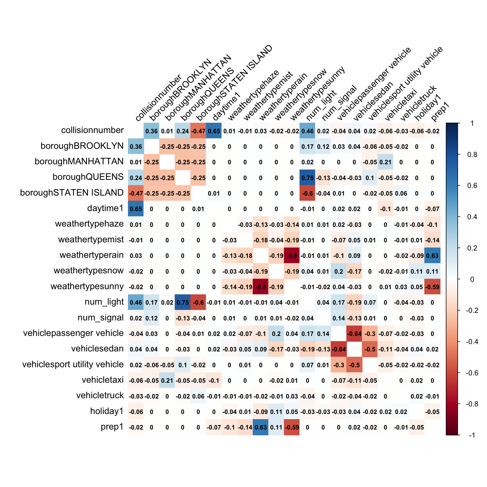
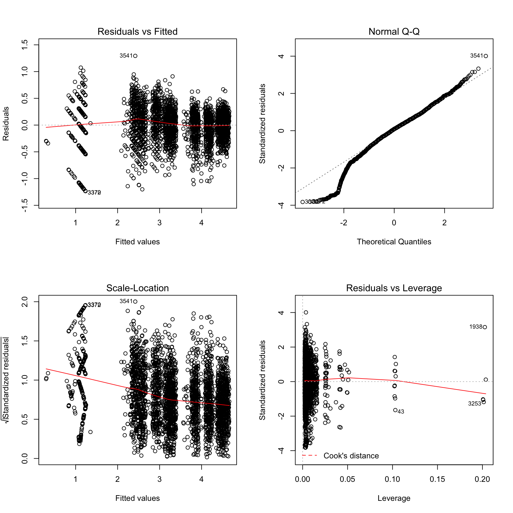

Regression
Description
In this research, we try to find relationship between collision and several factors. As a result, accident numbers is considered to be outcome (dependent variable), exposure of interest below are considered to be independent variables. Multiple linear regression is conducted to testify if correlation between outcome and predictors is significant.
collisionnumber: accident number at specific borough, date and time
daytime: According to analysis in overview, frequency of accident and injured people in the period of 8 am-20 pm is higher than other period of time. So we separate 24 hours into 2 catagories:use 1 to represent 8 am-20 pm (12 hours), 0 to represent elsewhere (12 hours)
borough: There are five different boroughs, Bronx, Brooklyn, Manhattan, Queens and Staten Island.
num_light: numbers of unfinished street light services
num_signal: number of nufinished traffic signal services
weathertype: weather type (fog, haze, mist, rain, snow and sunny)
prep: percipitation
vehicle: There are six kinds of vehicle catagories(passenger vehicle, sedan, sport utility vehicle, truck, taxi and others). We counts the vehicle catagory that have greatest number of cars at specific time, borough and date
holiday: use 1 to represent the day that is a holiday and weekend, use 0 to represent rest circumstance.
Result
1. Correlation Matrix**
cor_data =
cor(cbind(collisionnumber = pull(boro_daytime_weather_light_vt_hol,collisionnumber),
model.matrix(collisionnumber ~ borough + daytime + weathertype + num_light+ num_signal + vehicle + holiday +prep, boro_daytime_weather_light_vt_hol)[,-1])
)
cor_data %>%
corrplot(method = "color", addCoef.col = "black", tl.col = "black", tl.srt = 45, insig = "blank" , number.cex = 0.7, diag = FALSE)
Correlation between most variables is acceptable, but relationship between weathertype sunny and weathertype rain is above 70%, which indicate collinearity. When establishing model, we should always know that weathertype(sunny) shows most of information that weathertype(rain) contains.
2. Box-Cox Transformation**
fit2 = lm(collisionnumber ~ borough + factor(daytime) + weathertype + num_light + num_signal + factor(prep) + vehicle + holiday, data = boro_daytime_weather_light_vt_hol)
MASS::boxcox(fit2)
Box-Cox method applies a transformation by raising Y to different power, as we can see above, λ is close to 0, so we need to do natural logarithm transformation, turn Y into ln(Y).
3. MLR result**
boro_daytime_weather_light_vt_hol = boro_daytime_weather_light_vt_hol %>%
mutate(ln_collisionnumber = log(collisionnumber, base = exp(1)))
fit2 = lm(ln_collisionnumber ~ borough + factor(daytime) + weathertype + num_light + num_signal + factor(prep) + vehicle + holiday, data = boro_daytime_weather_light_vt_hol)
summary(fit2) %>%
broom::tidy() %>%
knitr::kable()| term | estimate | std.error | statistic | p.value |
|---|---|---|---|---|
| (Intercept) | 2.1069024 | 0.1246978 | 16.8960648 | 0.0000000 |
| boroughBROOKLYN | 0.7095696 | 0.0237988 | 29.8153287 | 0.0000000 |
| boroughMANHATTAN | 0.3125737 | 0.0210182 | 14.8715425 | 0.0000000 |
| boroughQUEENS | 0.5748078 | 0.0403652 | 14.2401684 | 0.0000000 |
| boroughSTATEN ISLAND | -1.4204219 | 0.0194501 | -73.0292005 | 0.0000000 |
| factor(daytime)1 | 1.2576627 | 0.0108625 | 115.7805056 | 0.0000000 |
| weathertypehaze | 0.1887726 | 0.1089203 | 1.7331251 | 0.0831588 |
| weathertypemist | 0.0908404 | 0.1062359 | 0.8550817 | 0.3925626 |
| weathertyperain | 0.1375273 | 0.1028581 | 1.3370581 | 0.1812879 |
| weathertypesnow | 0.1427384 | 0.1055153 | 1.3527743 | 0.1762124 |
| weathertypesunny | 0.1293622 | 0.1030361 | 1.2555038 | 0.2093771 |
| num_light | 0.0000613 | 0.0000634 | 0.9673223 | 0.3334477 |
| num_signal | 0.0000139 | 0.0000232 | 0.5984272 | 0.5495925 |
| factor(prep)1 | 0.0367187 | 0.0155665 | 2.3588220 | 0.0183860 |
| vehiclepassenger vehicle | 0.2480838 | 0.0665297 | 3.7289178 | 0.0001953 |
| vehiclesedan | 0.3523761 | 0.0660694 | 5.3334211 | 0.0000001 |
| vehiclesport utility vehicle | 0.2814519 | 0.0667477 | 4.2166519 | 0.0000254 |
| vehicletaxi | 0.4331257 | 0.0833836 | 5.1943774 | 0.0000002 |
| vehicletruck | -0.5312716 | 0.1587091 | -3.3474554 | 0.0008239 |
| holiday1 | -0.2011300 | 0.0229079 | -8.7799364 | 0.0000000 |
Above is result of multiple linear regression, it indicates that effect of borough is significant, BRONX works as reference, and all four indicator variables’ p-value is much smaller than 0.05. Brooklyn, Manhattan and Queens have a signifcantly greater number of accidents, while Staten Island has a signifcantly lower number of collision.
Besides that, p-value of “factor(daytime)1” is below 0.05. So this indicator variable is significant. Comparing with night, there are more accidents during the day.
p-value of num_light and num_signal is below 0.05. As for street light and traffic signal, their influence is not strong enough, people always believe that the presence of street light and traffic signal can reduce fatal road crash, which seems to be not reasonable statistically.
p-value of “factor(prep)1” is smaller than 0.05. Increasing of rainfall will significantly raise the number of accidents. However, the influence of weather is not significant.
The effect of “vehicle” is significant. “others” works as reference variables. All five indicator variables “vehiclepassenger vehicle”, “vehiclesedan”, “vehicletruck”, “vehicletaxi” and “vehiclesport utility vehicle” are significant. Driving passenger vehicle, sedan and sport utility vehcle will have a higher risk of involving in accidents, while driving truck can reduce the risk of accidents.
Last but not least, the influence of “holiday1” is also significant. It means that during holiday and weekend, there will be fewer accidents.
4. Model diagnostics
par(mfrow = c(2,2))
plot(fit2)
The four graph above prove the homoscedasticity of residual. The variance of residual does not change when fitted value changes. And it is also proved that residual’s expected value is 0. Through residual flutuates slightly around zero, it is still acceptable. Besides, residual is normality. No influential observation shows in the dataset. All assumption is satisfied.